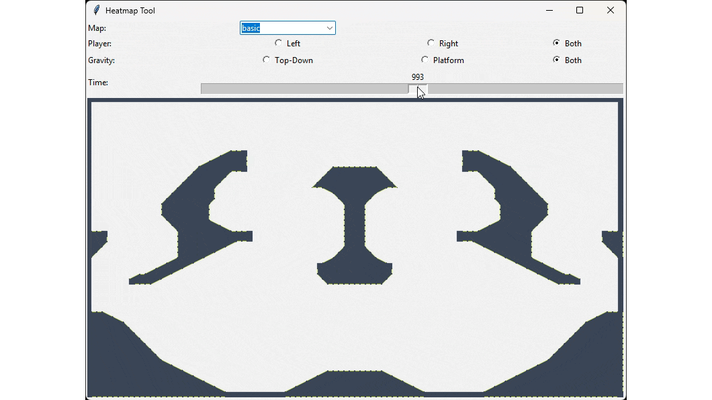
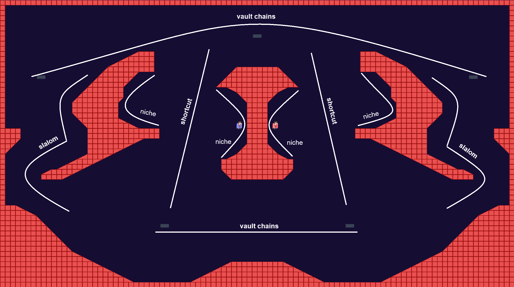
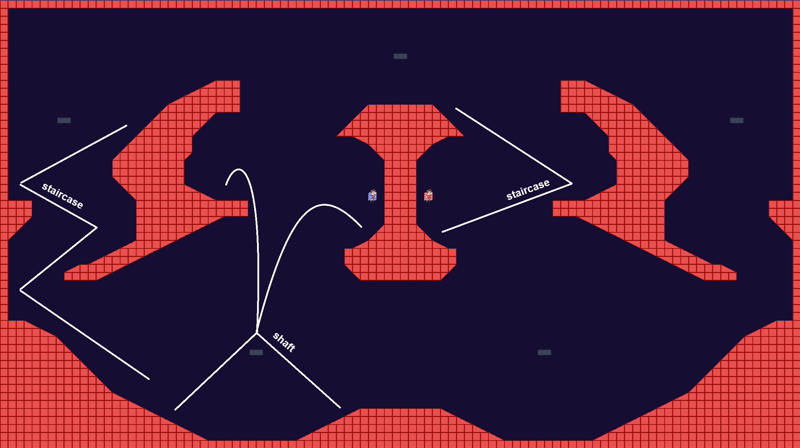
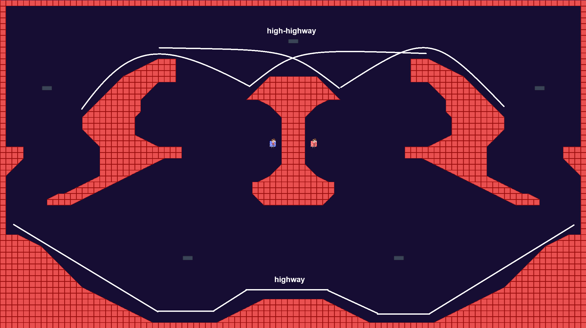
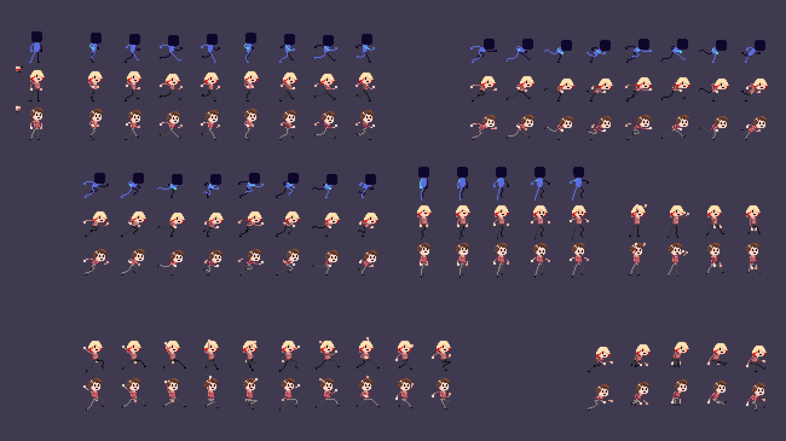
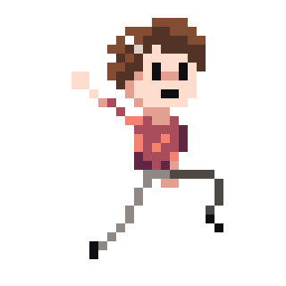
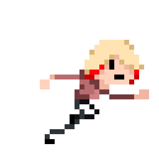

Gravity Tag
High-speed, high-pressure chases in a dynamic gravity system — alternating between platformer and top-down views. Outwit your opponent. Master the perspective shift.
About the game
Gravity Tag is a fast-paced competitive 2D platformer built around an original dynamic perspective system. Matches consist of chases where one player pursues the other, and the twist is that the game world constantly shifts between a side-scrolling platformer view and a top-down view — forcing both players to continuously adapt their movement and strategies.
The game draws comparisons to Speedrunners, but carves its own identity through the gravity mechanic and varied movement skills assigned to each unique character. Mastering the game means developing character knowledge, level awareness, and the ability to read your opponent's perspective as it alternates mid-chase.
Screenshots


Gameplay
Each round of a match is structured as a chase — one player is the tagger, one is the runner. The gravity system periodically shifts the game's perspective between a standard platformer view and a top-down overhead view, changing which axes and obstacles are relevant at any moment. Characters each have distinct move sets, and the levels are designed around the perspective shifts, rewarding players who can plan routes that work across both views.
- Dynamic platformer ↔ top-down perspective shifts
- Distinct playable characters with unique abilities
- Local multiplayer or AI enemy chases
- Online multiplayer via rollback netcode
- Asymmetric tagger / runner chase structure
- Singleplayer time-attack maps
- Multiple levels designed around dual-view navigation
- High skill ceiling with tactical depth
My Contributions
As the project leader and one of the two programmers, I implemented most of the systems and almost the entire gameplay.
Systems Programming
Gameplay systems
A chase system with a dynamic perspective - A game system based on changing gravity for 2 players with the option to adjust the rules and parameters of the game from the menu.
Time-attack map system - Single-player gameplay system based on breaking time records with recording and a leaderboard.
Tools
Analytical system - A system that collects 1v1 and time-attack match data and sends it to a database. Supported by an additional program written in Python to visualize position, gravity mode, and catch times in chases.
Menu and UI system - Used to create dynamic menus, lobbies, character selection, map selection, and in-game UI. Automatically detects device changes (controller and keyboard).

Catch heatmap Tool.Level editor - A built-in editor allows to create 1v1 and time attack maps. An option to create symmetrical map layouts inspired by the Aseprite system. This allows to place decorative elements and instantly test created levels.
Dialog editor and display - A system that allows to conveniently create visual novel scenes in many languages with support for editing visual accents, a glossary and a live view of the dialogue.
Enemy AI
A system consisting of 4 separate types of behavior:
- Top-Down Chasing
- Top-Down Evading
- Platformer Chasing
- Platformer Evading
Each type of behavior required a separate set of subsystems and parameters. In the case of the Top-Down view:
Top-Down Evasion Heatmap - It creates a heatmap of how valuable escape targets are to specific cells on the map. It uses data such as:
- Distance from the opponent
- Number of walls between the agent and the opponent
- Enemy line of sight
- Proximity to the wall
- Proximity to an obstacle that can be vault from
- Time to change of the gravity
- Cell vertical position
- Weights that change the meaning of specific parameters
Top-Down Path finding - Uses the A-Star to find a path from the hero to a selected point. Used for both chasing and escaping.
Top-Down Movement - Based on the path found by A-Star, it selects the appropriate input for the character. It treats the designated path as a template but adjusts movement to make sensible use of special abilities, vault obstacles, and avoid running right up against walls.
Based on these three functions, in a top-down view, when the agent is fleeing, it assesses the interest in escape cells and selects one whose value is above the appropriate threshold and maps a route to it. When chasing, it maps a route directly to the opponent. Then, based on the route, it executes moves.
In the platform view, AI algorithms are significantly more complex due to the dynamic movement system. The height, and therefore the distance, of the jump depends on the velocity at the moment of the jump, and the force of the vault from an obstacle depends on how close the agent is to its center at the moment of vault. For these reasons, among others, creating a network of connections and executing movement are difficult.
Platformer Nodes Connections Generation - A graph is created in which connections are checked for various inputs and input speeds for each node. Not only are connections recorded, but also the output speed.
Platformer Evasion Heatmap - Similarly to Top-Down, points are assessed, but only those directly on the ground are taken into account.
Platformer Path finding - A-Star finds path, taking into account the input and output speeds of each node. The calculated path includes information about the input performed to reach the next node.
Platformer Movement - Using the data stored in the path, the agent selects the appropriate input for the character. The calculated path contains only data between nodes located on the ground. When the character is airborne, it continuously analyzes landing points and selects the one closest to continue the path.
Additional
Implementation of 3rd party libraries:
Visual effects:
- Afterimages
- Particles
- Catch indicator
- Vault indicator
- God rays
- Dynamic sprite manipulation
- Dynamic led pannels reacting to gravitation and winning player with program to generate code for led patterns from sprites
Others:
- Dynamic camera system
- Control remapping system
Gameplay Programming
In addition to the gameplay systems mentioned above, I also implemented, among others:
- Top-Down movement and collision
- Platformer movement and collision
- Platformer momentum based physics
- Consumable resources active abilities that accelerate the character
- Passive or non-resource-consuming abilities that provide additional movement options
Game Design
As the project leader, I was responsible for coming up with the game idea, ensuring the gameplay supported the desired vision, and setting and adjusting physics parameters and character stats and skills.
Idea
The idea to create a game based on tag arose from inspiration from the professional sport of World Chase Tag, and from an attempt to combine such an activity with the atmosphere of sports anime. The combination of the top-down and platform views emerged during prototype development and testing to see which view best captured the vision of the game of tag. Each view had its advantages, and from this emerged the idea of combining both.
This combination is not accidental and has been adapted to play a specific role in the game during chases:
Top-Down is a view with a much greater emphasis on strategy. In this view, movement is much simpler and less dynamic. To maintain high speed, you need to plan your route carefully, carefully manage your special ability, and sequentially vault from obstacles. Because this view makes it much easier to reach every part of the arena, you also need to be strategic about where to be when gravity changes.
Platformer is a view where player skill reigns supreme. Thanks to the momentum based movement system, with a little practice, players can achieve very high speeds and quickly reach higher positions. Most passive skills, which grant additional movement abilities, also have a much greater impact in this view.
Because these views intertwine, players can't rely on just one strategy. Even if, in platform mode, one player is completely unable to reach their opponent due to a lack of skill, gravity will shift in a moment, and the colossal advantage will instantly vanish.
Close Calls
The most important experience I wanted to provide players as a designer is "close calls", situations where opponents are very close together for a period of time during a chase, which can result in either a catch or a narrow escape. Having observed numerous games during public events, I can confirm that we've managed to deliver this experience and that it evokes intense emotions, thanks to several well-thought-out measures:
Level Structure - Levels are closed, so distances cannot be increased indefinitely. Additionally, maps have many connections, allowing for shorter distances.
Catch System - It's designed so that catches don't happen automatically when players are in range; the player still has to press the appropriate button. This means that each catch is slightly delayed depending on the player's reflexes, prolonging the situation.
Active Skills - Currently, there are four active skills in the game, and each character has one of them. During development, I noticed that certain skills caused a given character to lose significantly more often, so I redesigned these skills. Since then, each skill serves to speed up the character in different ways:
- Sprint - gradually increases maximum speed
- Dash - instantly doubles current speed
- Float - instantly sets a slightly higher speed and removes friction
- Peelout - charge in place to launch at high speed in new direction
Thanks to this decision, each character can maintain similar speeds during the game, but in different ways, so when the characters are in close proximity and their speeds are similar, they can run next to each other for a longer time, maintaining the tension.
Dynamic Camera - The final element that heightens the excitement of such situations is the dynamic camera, which zooms in on the runners when they are close together. This creates the impression that they are so close to being caught. When the runner manages to increase the distance, the camera zooms out, giving them, literally, room to breathe.
Vaults
One of the most important mechanics enriching the chases is the vaulting system. Arenas feature obstacles that can be launched from by pressing the vault key while in range. The closer a character is to the center of the obstacle, the greater their speed during the launch. This not only adds another element of dexterity and a way to gain speed, but above all, it is a universal tool that works in both perspectives. Depending on the situation and the player's skill, vaulting can be used in many different ways:
- To gain speed
- To maintain speed
- To make a sharp turn/U-turn
- To gain height
- To slow down a fall
- To extend a jump
Characters
Each character is distinguished by a selection of three distinct elements: active skill, passive skills, and stats. All elements for a given character are chosen to support a specific playstyle.
Some passive skills add additional movement capabilities, such as:
- Wall Jump
- Air Dash
- Tripple Jump
and some of them serve as some kind of help:
- Auto Catch
- No slowdown when running uphill
- Always perfect vault
This approach is inspired by Sonic, where some characters often provides an easier playstyle. However, this isn't a one-sided improvement. As in Sonic, at the expense of some of the easier features, there are other changes. For example, Miriam, a character who, in Gravity Tag, has the ability to automatically catch, but this is at the expense of a shorter catch range and stats that increase launch power. This makes her a popular choice for beginners who are not comfortable with catching, as well as those who prefer a risky playstyle, reaching high speeds to smash into opponents at the cost of missing and losing all momentum by hitting a wall.
Level Design
Currently, Gravity Tag has 10 1v1 arenas and one time attack map.
Arenas
The first fully successful, fun, and game-design-friendly level was "Basic". Wondering why this arena worked while other layouts didn't, I decided to thoroughly analyze the components and use them to build subsequent arenas.
For a top-down view, the components are:
- Vault Chains - Obstacles arranged in a line to connect vaults
- Shortcut - Straight paths among others, without obstacles
- Slalom - Curved path
- Niche - Recess that widens the path and provides a place to hide

Top-Down level elements.For a platform view, I separate the elements into vertical ones:
- Staircase - Allows to get higher by jumping
- Shaft - A vertical passage where player can get higher with vaults

Platformer vertical level elements.And horizontal:
- Highway - The path at the very bottom that allows you to gain speed by simply running
- High-Highway - A path at the top that allows you to gain speed through precise jumps

Platformer horizontal level elements.Some elements automatically translate between views, for example, the staircase automatically creates slaloms and niches. When designing, I arrange obstacles to avoid situations where an obstacle is only useful in one specific view. The elements shown above were used to create the remaining nine arenas, arranging them in various configurations.
Metro Chase
Metro Chase is the first time-attack map and serves as a tutorial on the physics behind Gravity Tag.
At the beginning, there's a top-down section demonstrating how to avoid walls and how vaulting works.
After the gravity change, there is a wall. When the player attempts to jump over it, they will fall perfectly onto the slope and gain a lot of speed, teaching them how to accelerate downhill and translate vertical speed into horizontal speed. If then the player misses the jump or jumps without timing, they will crash into the wall.
The rest of the map is modeled after levels from 2D Sonic games, where the upper path is faster but it's easy to fall down. In my layout, player can use vaults on the lower paths to get to the upper ones.
At the very end, gravity changes and the map once again tests the player's skill in avoiding walls.
Pixel Art
Additionally, I made templates for almost all character animations and animated the first two characters based on these templates.

Sprites and Animations.
Adam leap animation.
Clea run animation.I also contributed to: Systems Prog. Gameplay Prog. — to learn more switch to Programming
I also contributed to: Game Design Level Design Pixel Art — to learn more switch to Design
Credits
| Miłosz Kawczyński | Design & Programming |
| Robert Kotliński | Marketing & Community Management |
| Julia Pietrzykowska | 2D Art & UI/UX Design |
| Mikołaj Przybylski | Programming |
| Julian Rakowski | Narrative Design & Translation |
| Weronika Lilia Sztobryn | 2D Art |
| Marta Świderek | 2D Art & Character Design |
| Michał Świstak | Music & Sound Design |